Discovering Power App Data with M365 Copilot using MCP
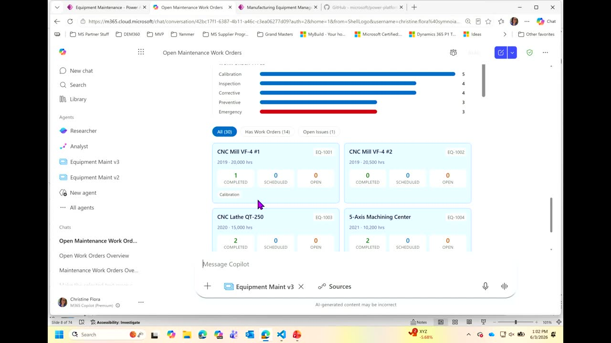
Chapters
Official description
With millions of users world-wide, Power Apps and Dataverse now sit atop critical business data, but developers face challenges with discoverability and schema understanding. This session introduces Power Apps Model Context Protocol (MCP), which empowers M365 Copilot to access app metadata, Dataverse schemas, relationships, and permissions. Learn how MCP enables Copilot to answer natural-language queries, aggregate data, and deliver real-time insights, plus best practices for Copilot-ready apps. Seating for this session is first-come, first-served. Add it to your schedule to plan your day and arrive early to secure a spot.
Summary
Overview
This intermediate demo session shows how Power Apps and Dataverse data can be made discoverable and actionable inside Microsoft 365 Copilot through the Power Apps Model Context Protocol (MCP), now in public preview. Christine Flora walks through enabling the MCP on a Power App, using its out-of-the-box CRUD tools, and building custom tools with rich Fluent UI generated via VS Code and Claude.
Key announcements
- Power Apps MCP is in public preview [00:01:31
 m05s
m05s m10s
m10s p05s
p05s p10s] — Available now through the preview Maker portal so developers can expose app data to M365 Copilot.
p10s] — Available now through the preview Maker portal so developers can expose app data to M365 Copilot. - Enabling the MCP yields four standard CRUD tools [00:14:40
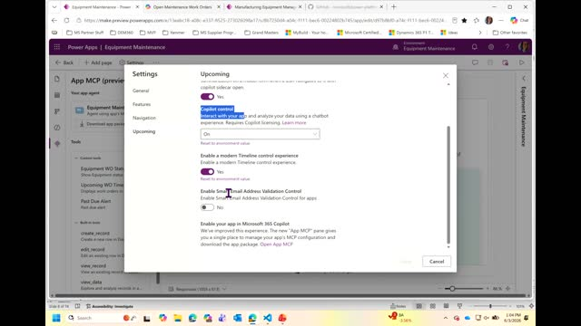
m05s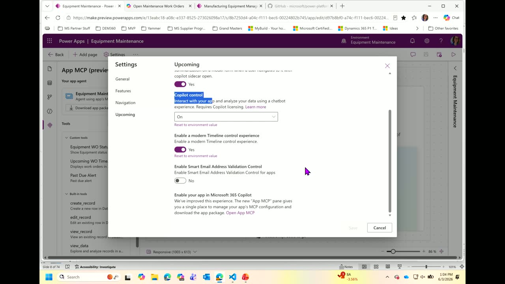
m10s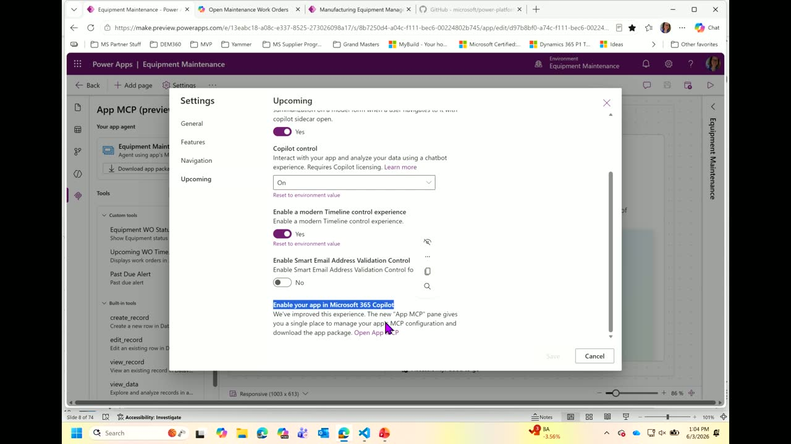
p05s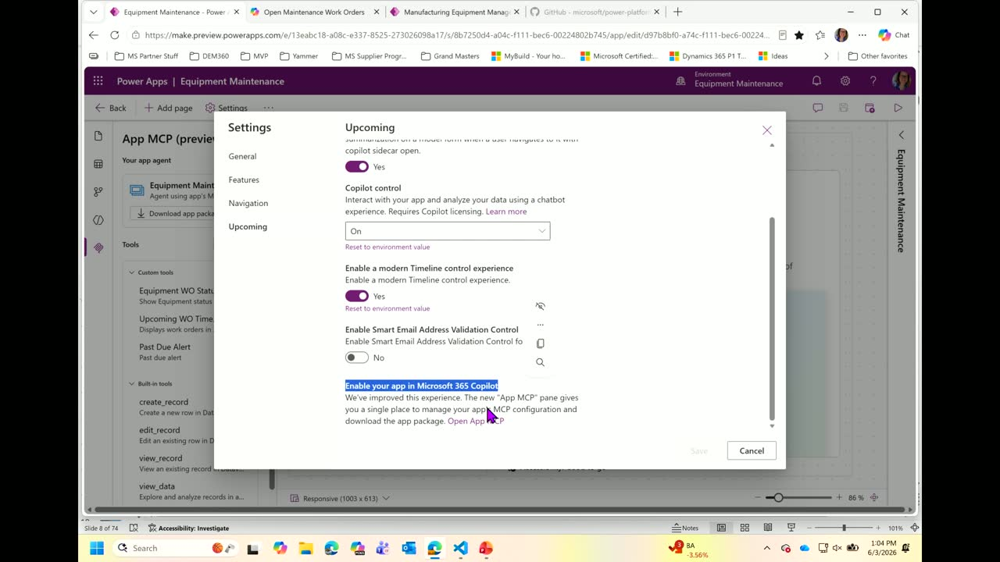
p10s] — Turning on the Copilot MCP setting automatically provides create, read/review, edit/update, and query tools against the app's Dataverse data. - Custom MCP tools with targeted Dataverse fields [00:10:54
 m05s
m05s m10s
m10s p05s
p05s p10s] — Developers can build custom tools that pass specific selected fields (rather than whole tables) to produce focused data insights at a prompt.
p10s] — Developers can build custom tools that pass specific selected fields (rather than whole tables) to produce focused data insights at a prompt. - Fluent UI generation via Claude/GitHub Copilot skill [00:18:46
 m05s
m05s m10s
m10s p05s
p05s p10s] — Microsoft provides a Power Platform skill for Claude and GitHub Copilot that turns a tool's JSON structure into a Fluent UI HTML file, with local preview against sample data.
p10s] — Microsoft provides a Power Platform skill for Claude and GitHub Copilot that turns a tool's JSON structure into a Fluent UI HTML file, with local preview against sample data. - Declarative agent packaging for M365 [00:23:36m05s
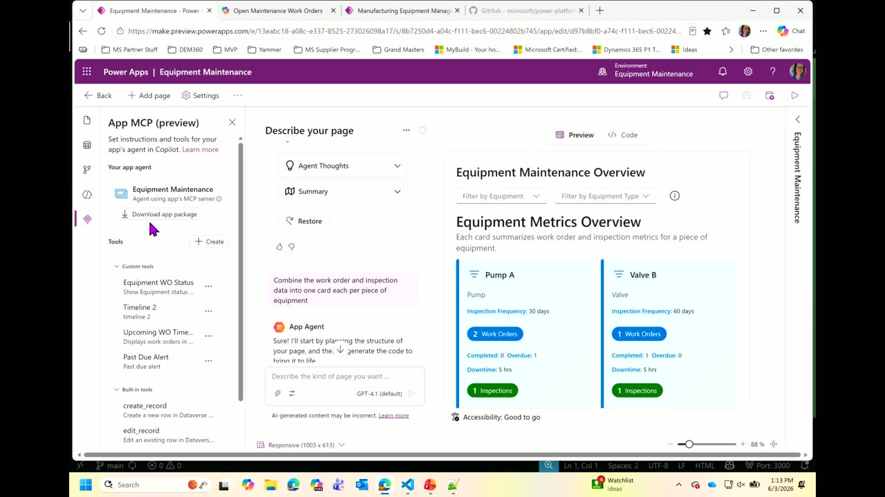
m10s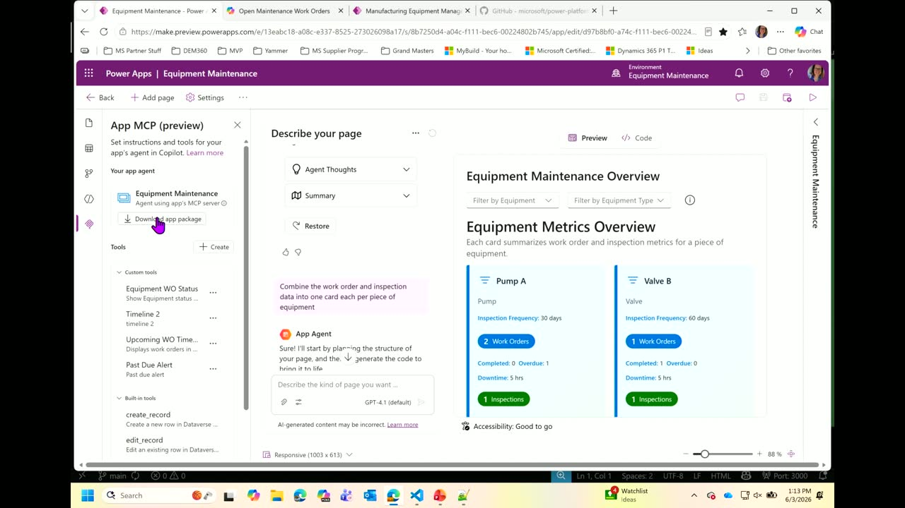
p05s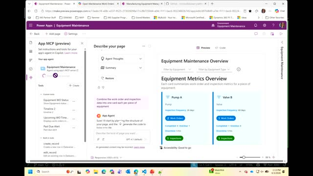
p10s] — Each set of tools can be downloaded as a declarative agent zip file and uploaded into Microsoft 365 (e.g., Teams) for end users.
{kind=link}
{kind=link}
{kind=link}
{kind=link}
{kind=link}
{kind=link}
{kind=link}
{kind=link}
Topics covered
- Power Platform as a suite for business makers and pro developers to build apps, automate processes, and create AI-driven solutions
- MCP described as a "universal translator" exposing app data to agentic experiences, including autopilots and Work IQ
- Accessing an app's agent in Copilot via the agent picker or by @-mentioning it so every prompt routes to the app
- Real-time, fully interactive UI surfaced in Copilot for viewing and editing live app records without leaving context, with the option to jump into the app at the current record
- Building custom tools in the Maker portal: writing instructions, selecting Dataverse fields, choosing manual vs. agent-decided filters, and generating a JSON structure via Test
- Generating and iterating on Fluent UI (charts, card dashboards, interactive timelines) using natural-language prompts in VS Code with Claude
- Publishing tools and the requirement to download/upload a new declarative agent each time a tool is added
- Permission and admin considerations for uploading agents into M365 and Teams
Notable quotes
"It's like a universal translator for your application and its data that is geared for the agentic world that we're in right now." — Christine Flora
"I can go straight in and see this live data from my application and edit and look and modify it without even leaving this context that I'm in." — Christine Flora
"You tell it what data from your app you want to pass, and you do that by saying add content." — Christine Flora
Products and tools mentioned
- Microsoft Power Apps
- Microsoft Power Platform
- Dataverse
- Power Apps Model Context Protocol (MCP)
- Power Platform Maker Portal (preview.powerapps.com)
- Microsoft 365 Copilot
- Copilot Studio
- VS Code
- Claude
- GitHub Copilot
- Fluent UI
- AI Builder
- Microsoft Teams
- Word, Outlook, Excel
- Work IQ [inferred]
- Git
Speakers featured
- Christine Flora — Microsoft MVP in Business Applications; 15 years working in Power Apps and Power Platform; based in San Diego, CA
Follow-up resources
- preview.powerapps.com (preview Maker portal for the public preview MCP)
Frames
{kind=link}
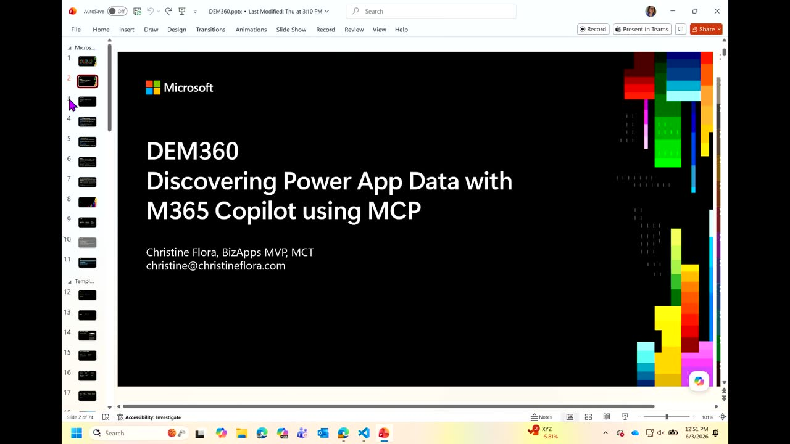
{kind=link}
{kind=link}
{kind=link}
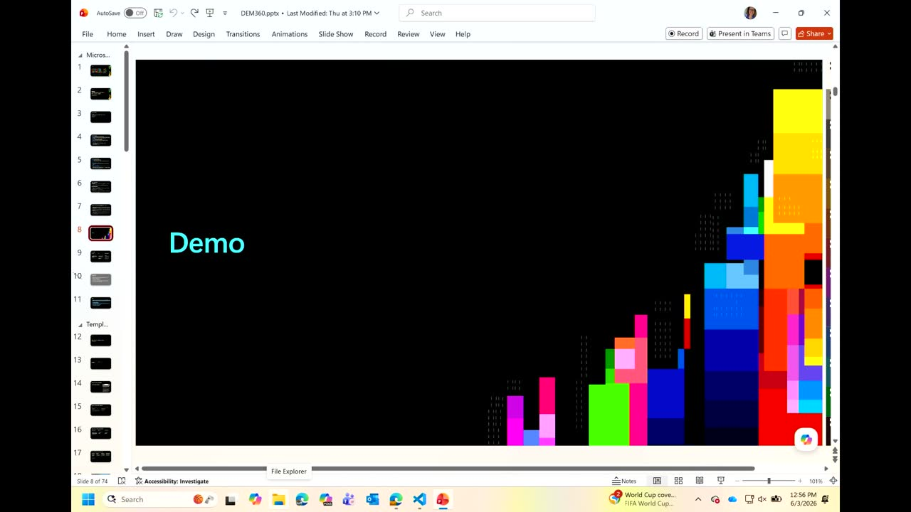
{kind=link}
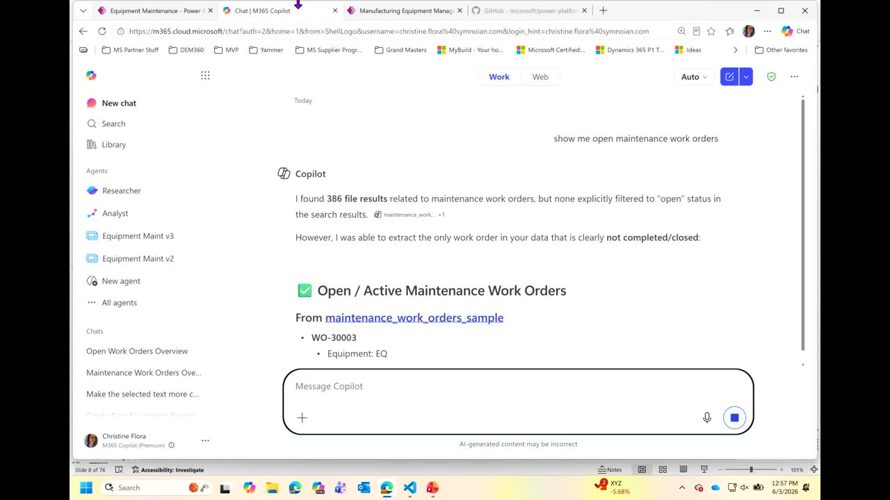
{kind=link}
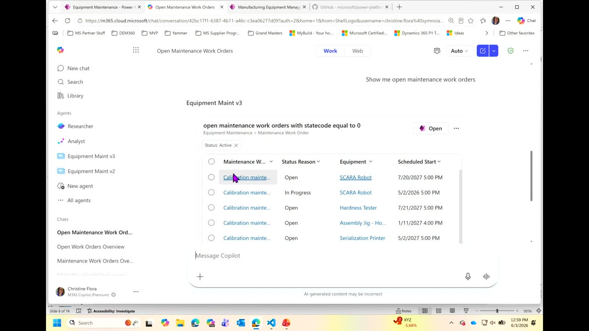
{kind=link}
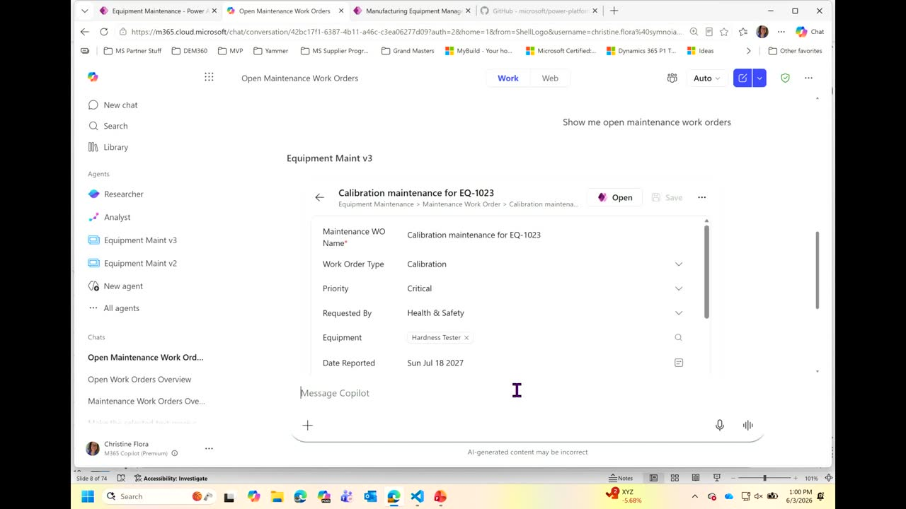
{kind=link}
{kind=link}
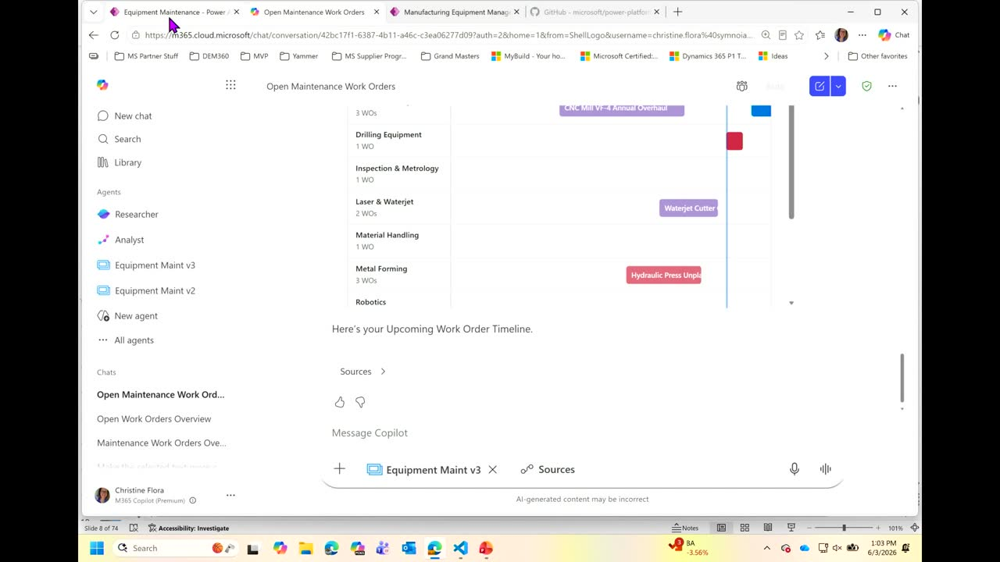
{kind=link}
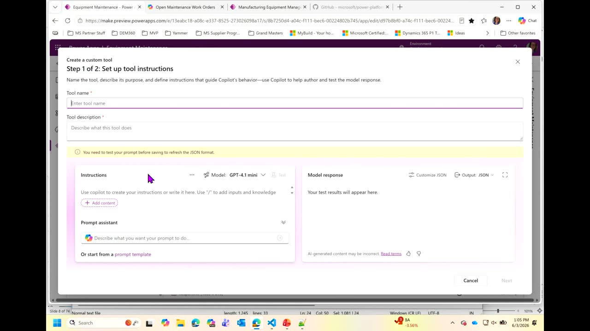
{kind=link}
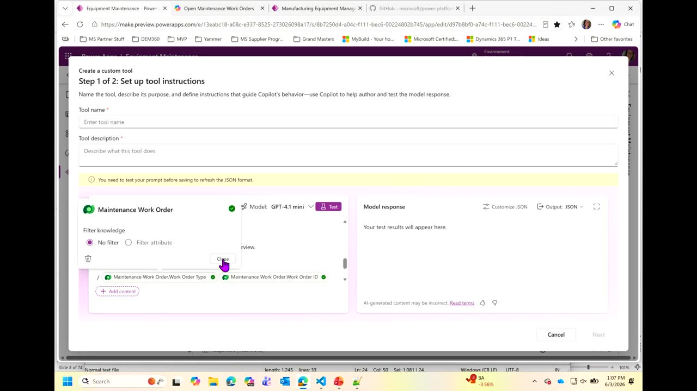
{kind=link}
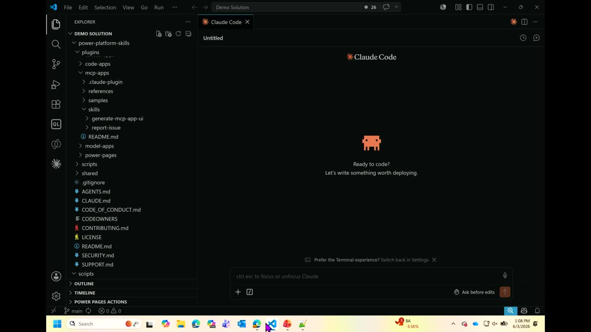
{kind=link}
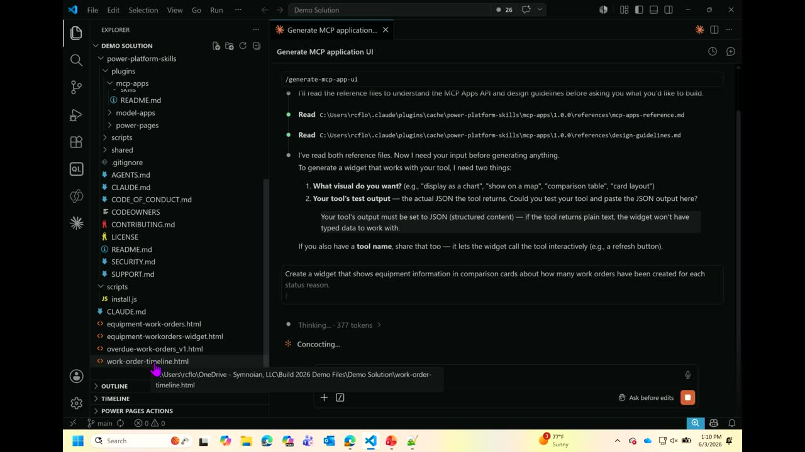
{kind=link}
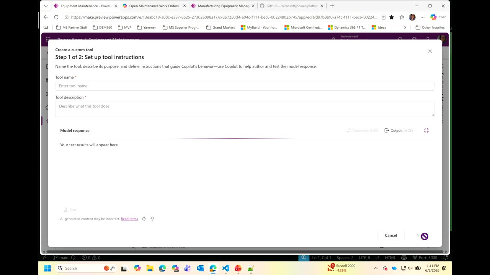
{kind=link}
Transcript
Show / hide transcript (23,420 chars)
[00:00:00] Thanks for coming. [00:00:01] This is DM360I, so appreciate you coming during the lunch [00:00:07] hour to my session. [00:00:09] I hope you'll get a lot of value out of [00:00:11] it. [00:00:12] I'm Christine Flora, I've been working in Power Apps and [00:00:16] Power Platform for about 15 years. [00:00:18] I'm a Microsoft MVP in biz apps and I'm from [00:00:21] San Diego, CA. [00:00:23] So just a short hop, right? [00:00:27] Just a short hop from here in the session. [00:00:31] First off, we're going to do a little bit of [00:00:34] grounding in what power Apps is, what value does it [00:00:38] have and why you should be interested in the MCP [00:00:42] and what it means to your agentic and and M [00:00:46] 365 discovery of your data. [00:00:50] Then I'm going to show you, I'm going to actually [00:00:54] code a custom tool for you to use in the [00:00:57] standard MCP for power Apps. [00:01:01] So you're going to get to see that that's going [00:01:04] to use Visual Studio or AVS code, I'm sorry, and [00:01:08] clawed to do the UI experience so that you can [00:01:11] see that in the MCP. [00:01:14] So pretty cool. [00:01:15] And then that'll give us a richer experience than M365, [00:01:21] than just the standard out-of-the-box tools that are available in [00:01:28] the MCP by default. [00:01:31] Then we're going to walk in and close it out [00:01:34] with some of the prerequisites because this is in private [00:01:37] preview now or public preview now. [00:01:40] So you'll be able to go and take what you [00:01:43] learn here, use the links to set up your and [00:01:48] create your own power Apps and have the data exposable [00:01:53] in M365 S just a show of hands. [00:01:56] Who has done power platform knows what power platform is [00:02:01] or is writing apps Yay well done. [00:02:05] So for the few that are quite a number of [00:02:08] hands. [00:02:08] So I really appreciate that. [00:02:10] And then so for those people that are not power [00:02:14] platform, what does that do right? [00:02:17] What is power platform? [00:02:18] So Power Platform is a suite of tools that enable [00:02:23] business subject matter experts and pro developers develop mission critical [00:02:29] applications and solutions. [00:02:32] They it helps you automate your processes and standardize them, [00:02:38] analyze the data that your Power app captures and also [00:02:43] create AI driven solutions that use that connected data without [00:02:48] needing deep technical skills. [00:02:53] Sounds like too good to be true, right? [00:02:55] But it's really awesome. [00:02:58] Wow, what does this do? [00:02:59] So for those business makers who don't code, but they [00:03:03] know their subject matter really well, right? [00:03:07] They can build their own apps using wiziwig controls and [00:03:13] form development, create data using natural language to describe that [00:03:21] data and then also use that to extend for whole [00:03:27] applications. [00:03:29] For the standard traditional developers, they can build an advanced [00:03:36] capabilities and tools using things like VS Code, Clod, GitHub [00:03:42] Copilot, Dev Hops, Git and even Copilot Studio to add [00:03:47] your own agents to your application. [00:03:53] And what are MCPS model context protocol. [00:03:58] And what this means is it's like a for those [00:04:01] Trekkies, it's like a universal translator for your application and [00:04:06] its data that is geared for the agonic word that [00:04:10] we're in right now. [00:04:12] So what this is going to do not only let [00:04:16] your data be discoverable and usable outside of your application [00:04:21] by those users that have access to it, but also [00:04:25] enable them for other experiences like agents like the autopilots [00:04:31] that we just saw yesterday and the work Iqs. [00:04:36] OK. [00:04:37] So you get kind of A2 Fer? [00:04:44] So I have a couple of extra slides in here [00:04:47] that you can go and download. [00:04:49] This slide, it's round what the value proposition of Power [00:04:53] Platform. [00:04:54] And since we have so many people, why does this [00:04:57] matter, right? [00:04:58] Everybody's doing this. [00:05:00] Why Power Apps and why this MCP? [00:05:04] So you can go and read this, I'm not going [00:05:05] to drain them for you. [00:05:07] And then also if you need a refresher on what [00:05:10] an MCP is and Power Apps, it'll tell you what's [00:05:13] going on. [00:05:14] So let's get into the actual creating this app. [00:05:19] I've already created the app for you to see. [00:05:21] It's an equipment maintenance application that's for the tracks, equipment [00:05:27] inspections and work orders on the shop floor. [00:05:31] So it tracks when they bought the equipment, when it [00:05:35] was installed, what kind of inspections that I had, and [00:05:39] also what kind of recent work orders that it had. [00:05:44] So let's take a look. [00:05:45] Now I'm going to be jumping through a couple of [00:05:48] like 3 different tools. [00:05:50] So I'm going to announce what I'm doing and then [00:05:53] if you have any questions, raise your hand and I'll [00:05:56] repeat it. [00:05:57] OK, so the first tool that I'm going to use [00:06:00] is the Power Platform Maker Portal. [00:06:02] That's where you create your application, your forms, your process [00:06:09] automations, and your data analysis, OK. [00:06:13] That's also where we do our custom tools for our [00:06:17] MCP. [00:06:18] The second one is VS Code and Claude, and I'm [00:06:23] going to use those to generate the UI for my [00:06:27] custom tools. [00:06:29] And you'll be able to see that. [00:06:31] And then of course, M365, I'm going to be showing [00:06:35] it in Copilot, but you're also going to be able [00:06:39] to use your MCP in Word, Outlook, Excel, and Teams. [00:06:44] So you get the whole breadth of it. [00:06:46] And now autopilots and work IQ. [00:06:49] Pretty cool. [00:06:51] So let's take a look at what that looks like. [00:06:57] So here's my app. [00:06:59] As you can see, it's a standard power app. [00:07:02] It's got my equipment, it's got my work orders, it's [00:07:05] got my inspections. [00:07:06] Just a standard power app contains all the data that [00:07:13] I need, and I'm just going to go over here [00:07:18] and look at Copilot. [00:07:20] Now I'm in Copilot and if I just type this [00:07:24] prompt right now, it's going to look across my OneDrive, [00:07:29] my Outlook, my Excel, my SharePoint in order to find [00:07:33] and solve this problem. [00:07:38] But my data is in my application and I need [00:07:42] for that person to see that. [00:07:46] So it's notice it's going out. [00:07:47] I'm going to stop this because I don't need you [00:07:51] like looking at all my stuff, right? [00:07:54] So it's not even looking at my data. [00:07:56] Well, what's great about this is I've already generated the [00:08:02] Agonic 4 micro fork M365 and put it in here. [00:08:06] So how do I access that? [00:08:08] I can do it two ways. [00:08:09] Notice I have these I have these agents over here. [00:08:20] Forgot to start zoom it. [00:08:21] Thank you. [00:08:22] And then I can choose this and work in my [00:08:26] agent for my equipment app right from here. [00:08:30] Or what I can do is I can @it so [00:08:33] that it knows every prompt that I have in here [00:08:38] is going to go to my app. [00:08:41] So now if I repeat that, what it's going to [00:08:46] do now you're going to see that it's going to [00:08:52] go out to my app, it's going to line things [00:08:58] up. [00:08:58] It's going to bring back the experience that I would [00:09:03] see from the views from the forms that are already [00:09:08] in my application based on my data without going into [00:09:13] the app. [00:09:15] And this is the same experience whether you're in Word [00:09:19] or Outlook or Excel. [00:09:22] Now this is a fully functional real time UI. [00:09:28] So I could literally say right now, hey, Joe sent [00:09:32] me a new piece of equipment in Outlook, go out [00:09:36] to Outlook, pull that in and add it to the [00:09:39] equipment application. [00:09:41] And it would know how to do that because the [00:09:45] MCP has the basic CRUD experience. [00:09:49] But what's cool about this is I can go straight [00:09:53] in and see this live data from my application and [00:09:57] edit and look and modify it without even leaving this [00:10:01] context that I'm in. [00:10:04] So this is a full UI and I can go [00:10:08] in and edit this as much as I want. [00:10:12] And as you can see, I can also say, oh, [00:10:15] this is a little bit more complicated. [00:10:17] I actually need to go to the app. [00:10:19] I don't need to bring it back up and change [00:10:21] my context. [00:10:22] I can just choose this window right here and it'll [00:10:26] automatically open my app, but it'll open it from where [00:10:30] I was right now. [00:10:31] So if I have this record open, it'll open straight [00:10:34] in my app. [00:10:36] That's pretty cool, right? [00:10:41] That's really cool. [00:10:43] But what if I want to give more than the [00:10:45] basic experience? [00:10:47] I want to be able to give real data insights [00:10:51] at a prompt for my users. [00:10:54] This is where the custom tools for the MCP come [00:10:56] in. [00:10:57] I've actually created a couple, so I want to show [00:10:59] you what those look like. [00:11:03] So the first one is I'm going to say show [00:11:07] equipment work order status. [00:11:12] Now this is going to go out to my app [00:11:15] maybe. [00:11:16] Nope. [00:11:17] What did I not do? [00:11:18] I didn't mention it. [00:11:21] OK, now let's try that again. [00:11:28] Now what I've done is I've created this custom user [00:11:33] experience around the equipment and made it into cards. [00:11:38] So you can see at the equipment level what the [00:11:41] inspections are. [00:11:43] It's kind of like a dashboard, kind of like the [00:11:45] experience that we would build right in Power Platform. [00:11:54] Everybody send me good demo vibes. [00:12:02] There we go. [00:12:04] Yay. [00:12:06] So here's my app. [00:12:07] You notice I have some different kinds of things, right? [00:12:10] I have this really great chart. [00:12:12] At a moment's notice, out of single visual, I can [00:12:17] see what these different equipments look like, what they've had, [00:12:22] what kind of inspection, And I created this UI with [00:12:27] some natural language prompts. [00:12:32] That's pretty cool, right? [00:12:35] Now here's my next one. [00:12:38] I created a timeline. [00:12:40] I wanted to see what's upcoming for my work orders [00:12:44] and what equipment is coming up, right? [00:12:48] And also are there any ones that are past due? [00:13:00] So I've created this custom tool, right? [00:13:04] It's going out to my application, it's pulling that data [00:13:08] in. [00:13:20] There we go. [00:13:22] Now I have a full rich UI that I can [00:13:28] present to my users. [00:13:32] This is fully interactive. [00:13:34] I can change the granularity of the timeline, I can [00:13:37] change the equipment types, the work order types, the statuses, [00:13:41] and I can even hover over and see what equipment [00:13:44] this was supposed to be for. [00:13:48] And it's all scrollable within this app. [00:13:51] That's pretty cool, right? [00:13:53] Very impressive. [00:13:56] So let's go see how we do this. [00:13:59] You guys ready? [00:14:00] OK, so I'm going to go over to the Maker [00:14:03] portal, because this is still public preview. [00:14:07] You're going to need to go over into thepreviewmake.preview.powerapps.com, right? [00:14:14] And I'm going to need to turn on a couple [00:14:16] of things Settings. [00:14:18] So I'm going to go in this my app, I'm [00:14:21] coming in my settings and I need to do this [00:14:23] copilot control. [00:14:25] Turn that to yes, and I actually have a slide [00:14:28] for prerequisites and how you get the bits and all [00:14:31] that stuff at the end. [00:14:32] So you'll be able to see that and then you're [00:14:36] going to enable the Copilot MCP. [00:14:40] Now it's a yes or no. [00:14:42] Notice I have this open app MCP right here. [00:14:46] When you turn this on, you get all the, you [00:14:49] get 4 basic tools, all the CRUD, edit, create, review [00:14:54] query, right? [00:14:57] So I'm going to go over here. [00:14:58] And as you can see, this is the MCP that [00:15:02] you saw over in M365. [00:15:05] Notice these custom, these standard tools down at the bottom [00:15:12] and notice my custom tools. [00:15:16] So how do I go about doing a custom tool? [00:15:18] It's as easy as saying create. [00:15:21] And what that's going to do is that that is [00:15:26] going to a little demo issue because I forgot to [00:15:31] bring that up, but that came in. [00:15:35] So what you can do is you have two ways [00:15:38] you describe what you want to build, right? [00:15:43] And you can do this with a natural language prompt, [00:15:46] just like if you've ever used AI Builder, it's like [00:15:49] that or I have my custom prompt already because I [00:15:52] know it works. [00:15:55] And then you set up your instructions, you set up [00:15:59] your output. [00:16:00] But here's the real magic. [00:16:01] You tell it what data from your app you want [00:16:05] to pass, and you do that by saying add content. [00:16:10] So notice that I have this Dataverse link. [00:16:15] I'm going to go out to my maintenance work orders [00:16:21] and I'm going to start selecting fields. [00:16:27] Now keep in mind, I don't want to select this [00:16:29] whole table, right? [00:16:30] I want to make this very targeted for my user [00:16:33] and what I'm looking at. [00:16:36] So I'm going to go down here. [00:16:37] I'm going to pull a couple of fields in. [00:16:39] Just check these off. [00:16:41] I want the schedule start and end, right? [00:16:43] Because I had that in the thing who's requested by [00:16:47] and priority. [00:16:49] That sounds like a good, good set. [00:16:54] Now, sometimes it does this. [00:16:55] Notice that was the ad was below the window, so [00:16:58] it didn't like that. [00:17:00] So it's going to make me do it again and [00:17:02] I'm going to click add. [00:17:06] Now you can set up your own filter or you [00:17:09] can have the MCP and the agent decide the filter. [00:17:13] It's up to you. [00:17:15] So I'm not going to put any filter on this. [00:17:18] And just for caution, I'm going to remove this slash. [00:17:23] Notice these fields, those are the ones that I selected. [00:17:29] Now the next thing is I'm going to what this [00:17:32] is going to do, when I hit test, it's going [00:17:35] to create a Jason structure of this data. [00:17:39] So I'm going to hit test and then I'm going [00:17:43] to use that Jason over in Visual VS Code with [00:17:48] Claude to determine how the UI gets created. [00:17:53] And that's going to create a a fluent UIHTML file [00:17:59] for you guys. [00:18:02] So if you're fluent and fluent UI, you can code [00:18:07] your own HTML or you can have Claude or GitHub [00:18:11] Copilot do it for you. [00:18:13] Both are applicable. [00:18:17] So notice now I have this Jason. [00:18:21] So it went out and looked at my Jason, looked [00:18:24] at my table structure and I have that. [00:18:28] So I'm in the maker portal. [00:18:29] Now I'm going to go over to VS Code. [00:18:33] OK, so here's my VS Code. [00:18:39] I have the power platform plug in in I have [00:18:43] there's some power platform skills. [00:18:46] Microsoft has actually done a skill for clod and GitHub [00:18:50] copilot that this will use to create that HTML. [00:18:55] So all I have to do in clod is type [00:19:00] in generate MCPAPPUI. [00:19:04] Now it's going to go off and do its clod [00:19:07] thing, right? [00:19:08] It's clodding. [00:19:08] And notice it's asking me for two things. [00:19:12] Describe what you want and then give me that, Jason. [00:19:18] So what I'm going to do, because we're all about [00:19:22] cut and paste, is I'm going to go over here [00:19:25] and I'm going to paste in this description. [00:19:30] Now notice it's not as big as the description and [00:19:33] the prompt that I have over in the maker portal. [00:19:36] And then I'm going to go back over to the [00:19:39] Maker portal and I'm going to cut and paste this, [00:19:42] Jason. [00:19:49] And then I'm going to let it loose. [00:19:52] That's all I need to do this UI. [00:19:56] Now, this particular 1, you saw how this is the [00:19:58] timeline, right? [00:19:59] You saw it was pretty robust, right? [00:20:03] This one took about two to three minutes to generate. [00:20:07] So while it's doing its thing, I'm going to show [00:20:10] you the end result. [00:20:12] OK, I have that over here. [00:20:16] In this work order timeline now I can click on [00:20:20] that and I can see what it generates and I [00:20:23] can edit this natively. [00:20:25] I can go into cloud or or GitHub Copilot and [00:20:28] reiterate and say no, I don't like these colors no, [00:20:32] I want a card in this I want it generated [00:20:34] this way. [00:20:35] For me, it was about I want timeline, that kind [00:20:38] of thing, right? [00:20:41] And so this is the actual code. [00:20:43] Now what's cool about this is you can actually preview [00:20:49] this and see what it's looking like visually with sample [00:20:55] data before you. [00:20:57] So that's helps you visualize what you're building, right? [00:21:01] Pretty cool. [00:21:04] So I'm going to copy once this is done. [00:21:06] Once you have the way that you want it, you [00:21:09] just copy and paste it. [00:21:15] OK, so I'm in Visual VS Code now. [00:21:19] I'm going to go back into the Maker. [00:21:20] I told you I was hopping around a lot, so [00:21:24] let's go over to the maker portal. [00:21:28] So I've got my Jason. [00:21:41] I don't know why it's not testing. [00:21:46] It must have waited too long because this next button [00:21:49] should have been enabled. [00:21:52] I'm sorry. [00:21:55] Well, it it wasn't a name. [00:21:57] Oh, I know what you know why it is. [00:21:59] I didn't have a description and a name. [00:22:02] He's right here. [00:22:20] OK, now the next button right. [00:22:23] Thank you. [00:22:30] So it's thinking now I can leave this widget code [00:22:34] as it is and let Copilot or any agent decide [00:22:38] what it's going to look like. [00:22:41] But what I'm going to do is I'm going to [00:22:44] paste that fluent UI in so that it'll go and [00:22:48] then I click save. [00:22:53] Now my MCP has that timeline too. [00:23:03] Important step, as all you guys know with Power Platform [00:23:09] is publish, always publish. [00:23:11] So we're going to publish this now how do I [00:23:16] get it back in the M365? [00:23:19] Here's the magic, right? [00:23:20] So that was pretty cool. [00:23:21] Did you guys like that? [00:23:23] You follow that? [00:23:23] OK, notice this download. [00:23:26] So once you've got your tools in here and every [00:23:28] time that you create a new tool, you're going to [00:23:30] have to do this, which is kind of a pain, [00:23:32] but it's still, you still need to do that. [00:23:34] I'm going to download this package. [00:23:36] This is going to be the declarative agent that you're [00:23:39] going to upload into M365. [00:23:41] It's literally that simple. [00:23:45] Now, there's some niggliness around your permissions. [00:23:50] So if you have permissions to upload agents into your [00:23:53] M365 or your Global Admin, there's some hoops and stuff [00:23:57] that you need to jump through to get that agent [00:24:01] over. [00:24:04] So it's generating and what it's going to do is [00:24:07] in my Downloads folder, it's going to have a declarative [00:24:11] agent zip file and that's what I'm going to load [00:24:14] over in the M365. [00:24:19] There we go. [00:24:20] I've done this a little bit just practicing. [00:24:22] So I have 4 in that. [00:24:24] That's over in my downloads folder. [00:24:26] Now switching back, jumping again, I'm going to go over [00:24:34] to I actually want teams. [00:24:38] I should have brought this up because I don't want [00:24:40] all my conversations. [00:24:42] Oh good. [00:24:44] Yay. [00:24:44] OK, so I'm in teams. [00:24:47] I have rights to put agents up in teams. [00:24:50] All I have to do is click on this button [00:24:54] for apps, choose manage apps and upload the app, go [00:24:59] out and pick that declarative agent. [00:25:04] Now, if you're don't have the rights of an M365 [00:25:08] admin, you'll probably have to ask them to publish it [00:25:12] for you, OK. [00:25:13] And they'll set up all the policies and does it [00:25:16] publish for everybody or just this group, you know, discoverability, [00:25:20] they'll do all of that. [00:25:23] So all I have to do is click on this, [00:25:26] click open, and it'll load up into Teams and it'll [00:25:29] be available for M365 users. [00:25:34] And that's pretty much it.